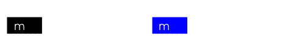
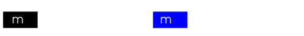

Urti
- Urti tra due punti materiali
- Urto completamente anaelastico
- Urto elastico
- Urto anaelastico
Antonio Pierro @antonio_pierro_
Per consigli, suggerimenti, eventuali errori o altro potete scrivere una email a antonio.pierro[at]gmail.com
Urti tra due punti materiali
- Si definisce urto tra due punti materiali un'interazione che avviene in un intervallo trascurabile rispetto al tempo di osservazione del sistema.
- Le forze che si manifestano durante l'urto sono forze interne al sistema.
- In assenza di forze esterne si verifica la conservazione della quantità di moto.
- In assenza di momento di forze esterne si verifica la conservazione del momento angolare.
Urto completamente anaelastico
- Un urto si dice completamente anaelastico quando i due punti restano attaccati dopo l'urto formando un unico corpo puntiforme di massa \( m_1 + m_2\)

- se \(\vec{v_1}\) e \(\vec{v_2}\) sono le velocità dei due punti nell'istante prima dell'urto e \(\vec{v}^{'}\) la velocità comune immediatamente dopo l'urto, si ha:
\[
m_1 * \vec{v_1} + m_2 * \vec{v_2} = (m1 + m2) \vec{v}^{'} = (m1 + m2) \vec{v_{cm}}
\]
- Subito dopo l'urto i punti si muovono con la stessa velocità che aveva il centro di massa.
Energia nell'urto completamente anaelastico
- Calcoliamo l'energia cinetica prima e dopo l'urto applicando il teorema di könig:
\[
E_{cinetica, iniziale} = \frac{1}{2} * m v_1^2 + \frac{1}{2} * m v_2^2 = E_{k}^{'} + \frac{1}{2} (m_1 + m_2) * v_{cm}^2
\]
\[
E_{cinetica, finale} = \frac{1}{2} (m_1 + m_2) * v_{cm}^2
\]
- Nel'urto completamente anaelastico veiene assorbita l'energia \(E_{k}^{'}\) (l'energia cinetica rispetto al centro di massa prima dell'urto). Infatti, dopo l'urto non c'è moto rispetto al centro di massa.
Urto elastico
- Si definisce urto elastico un urto durante il quale si conserva l'energia interna del sistema.
- Nell'urto elastico possiamo utilizzare le equazioni:
\[
\vec{P}_{iniziale} = \vec{P}_{finale}
\]
\[
{E_{cientica,iniziale}} = {E_{cinetica,finale}}
\]
- I due corpi che si urtano subiscono durante l'urto delle deformazioni elastiche,
riprendendo la configurazione iniziale subito dopo l'urto.

Urto anaelastico
- Si definisce urto anaelastico un urto in cui:
- dopo l'urto i punti restano separati
- la quantità di moto del sistema si conserva
- l'energie cinatica non si conserva
Introduzione ai problemi con gli urti: esempio di urto anaelastico
- Un proiettile di massa (m1) 50 g e con velocità (v) 40 m/s si conficca in un blocco di massa (m2) 400 g.
Il proiettile si muove orizzontalmente e il blocco si trova inizialmente in quiete.
- Determinare:
- La velocità del sistema dopo l'urto (v')
- La percentuale di energia dissipata dopo l'urto.
Soluzione
- Imponiamo la conservazione della quantità di moto prima e dopo l'urto
\[
m_1 v = m_1 v^{'} + m_2v^{'} = (m_1 + m_2) v^{'}
\]
\[
v^{'} = \frac{m_1}{m_1+m_2} v = 4,44 m/s
\]
- Calcoliamo ora la percentuale (P) di energia dissipata:
\[
P = \frac{T - T^{'}}{T}, \quad T^{'} = \frac{1}{2}(m_1 + m_2) v^{'2} \Rightarrow P = 0.88
\]